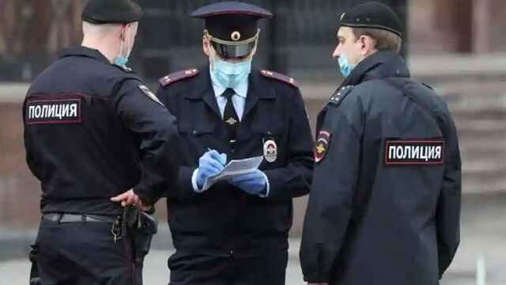

¿Tiene realmente Trump coronavirus?Las contradicciones desatan todo tipo de teorías
Las contradicciones sobre el diagnóstico y la evolución de Donald Trump han desatado las teorías de la conspiración a lo largo del espectro político, polarizando aún más si cabe la opinión popular.El coronavirus ha entrado más si cabe en acción y la tensión prolifera en Estados Unidos mientras que en la Casa Blanca y el Congreso trabajan a contrarreloj en diferentes escenarios para los próximos 30 días.
El doctor Brian Garibaldi, que forma parte del equipo médico del presidente Trump, dijo en una rueda de prensa este domingo que el presidente podría recibir el alta médica este lunes.El mandatario recibió el sábado una segunda dosis de Remdesivir -el tratamiento experimental que el propio presidente lleva recomendando desde hace meses para luchar contra el coronavirus- y 'hoy se siente bien'.
'Ha estado despierto y dando vueltas.Nuestro plan para hoy es que coma y beba, que se levante de la cama', dijo Garibaldi a la prensa congregada en el Centro Médico Militar Nacional Walter Reed, el hospital donde se encuentra hospitalizado desde el viernes.'Si sigue luciendo y sintiéndose tan bien como hoy, nuestra esperanza es poder darle el alta tan pronto como mañana, con lo que podría volver a la Casa Blanca, donde podrá continuar con su tratamiento', añadió el facultativo.
Trump compartía los resultados positivos de su test de Covid el viernes de madrugada en Twitter.Poco después, su médico, Sean Conley, proporcionaba detalles adicionales sobre su estado: 'A última hora de la mañana del viernes, cuando volví a visitarlo (en su cama), el presidente tenía fiebre alta y su saturación de oxígeno descendía transitoriamente por debajo del 94%'.'Teniendo en cuenta estos acontecimientos, estaba preocupado por la posible progresión rápida de la enfermedad', alegó.
Horas después, Trump tuitea un video desde el hospital para acallar rumores sobre su empeoramiento mientras metía caña al Congreso para aprobar el segundo paquete de ayudas Covid.
El sábado, el doctor Conley presentó a los periodistas el diagnóstico oficial de Trump, pero fue rápidamente corregido desde la Casa Blanca.Mientras el doctor Conley decía estar 'extremadamente feliz' con el progreso logrado por el presidente, un funcionario de la Casa Blanca posteriormente identificado por The Associated Press como el jefe de gabinete del presidente, Mark Meadows, lo contradijo: 'Los signos vitales del presidente durante las últimas 24 horas fueron muy preocupantes y las próximas 48 horas serán críticas en términos de su atención.Todavía no estamos en un camino claro hacia una recuperación completa'.
El propio Trump decidió tomar cartas en el asunto.Con camisa y chaqueta pero sin corbata y más pálido de lo habitual, el líder estadounidense recurrió una vez más a Twitter para publicar un video el sábado por la noche en el que aseguraba sentirse 'mucho mejor ahora' y que esperaba 'volver pronto'.
Al tiempo, en un comunicado oficial de la Casa Blanca, el médico del presidente dijo que este había logrado un 'progreso sustancial' y que sería monitorizado de cerca el domingo.Según fuentes cercanas citadas por la prensa estadounidense, el presidente está recibiendo un tratamiento experimental a base de infusiones de plasma, vitaminas y Remdesivir.
El goteo continuo de informaciones y contra-informaciones ha desatado un aluvión de teorías de la conspiración sobre el estado de salud del presidente de Estados Unidos.Mientras el cineasta y activista de izquierdas Michael Moore llamaba mentiroso a Trump desde su página de Facebook y le acusaba de fingir su contagio para retrasar unas elecciones que va a perder, un usuario de Twiitter predecía que en octubre Trump anunciaría un contagio de coronavirus para emerger milagrosamente curado 14 días después gracias al uso de la medicina contra la malaria que lleva promocionando desde hace meses.
En la misma línea, varios grupos señalan en medios sociales que esta es la jugada maestra de Trump para anunciar que ha superado la Covid-19 gracias a la nueva vacuna, lista antes de las elecciones, como había prometido.
Trump’s October surprise will be the announcement of 'his infection.'Fake, but quite dramatic.This twist will blow Biden off the screens, the 'Trump COVID watch' dominating every minute of every day.Then, 14 days later, Trump will emerge, 100% cured by hydroxychloroquine.— JohnCammo (@JohnCammo) September 18, 2020
Otros van más allá diciendo que lo que persigue Trump con su supuesto contagio es forzar que el vicepresidente Mike Pence le sustituya en el Gobierno y en la candidatura presidencial republicana –en caso de que siguieran adelante las elecciones– para ser el nuevo presidente y como tal, concederle a Trump un indulto general en un hipotético
impeachment .
También hay quien defiende que todo esto no es más que un paripé de Trump para conseguir sacar adelante las propuestas que le han bloqueado los parlamentarios de ambas bancadas.Teoría que ganaba fuerza el sábado cuando Trump tuiteaba a gritos que 'nuestro gran Estados Unidos de América quiere y necesita estímulo.Trabajad juntos y hacedlo'.Otra corriente conspiranoica que ha ganado fuerza en la última semana es la de que Trump habría infectado a propósito al candidato demócrata, Joe Biden, para alargar su tiempo en la Casa Blanca.
Cabe destacar que el moderador del debate presidencial, Chris Wallace, reveló que el presidente Trump llegó demasiado tarde al debate del 29 de septiembre para hacerse la prueba y los coanfitriones de la Clínica Cleveland y la Universidad Case Western Reserve decidieron aplicar el llamado
sistema de honor y permitir a quienes llegaban tarde de ambas campañas afirmar que ya habían dado negativo en las pruebas para seguir adelante con el apretado horario.
En el otro extremo, varias teorías apuntan a que fue Biden el que infectó a Trump durante el primer debate electoral o que los demócratas, en connivencia con China, se habrían contagiado deliberadamente para infectar al presidente sin correr ningún riesgo, dado que científicos chinos les habrían proporcionado un antídoto eficaz para recuperarse de la enfermedad.
Una tercera vía es la de quienes defienden que una nueva corriente política de centro habría infectado a los candidatos presidenciales republicano y demócrata para hacerse con el poder en la Casa Blanca.
'La razón por la que estamos viendo conspiraciones y todo tipo de dudas provienen tanto de personas de izquierda como de derecha y tiene mucho que ver con toda la información errónea relacionada con el coronavirus que se ha sucedido en los últimos meses, en particular las ideas que el presidente ha avanzado él mismo', dijo a
BuzzFeed News Joan Donovan, directora de investigación del Centro Shorenstein de Medios y Políticas Públicas de la Universidad de Harvard y uno de los principales investigadores sobre manipulación y desinformación en medios sociales.
Mientras todo esto ocurre, desde la Casa Blanca y el Congreso se trabaja a contrarreloj, barajando diferentes escenarios para los próximos 30 días.Entre otras opciones posibles se estudia invocar la 25ª Enmienda para que el vicepresidente del gobierno, Mike Pence, tome las responsabilidades del jefe del Ejecutivo de forma temporal, retrasar las elecciones o seguir adelante con otro candidato republicano.
Posted On: 2020-10-05T02:48:00
Posted By: Ángela González Rodríguez





Content Date: 2020-10-05
Download Date: 2021-05-13
Document ID: L0C04C9D2